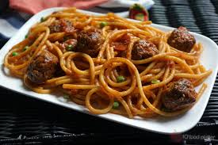
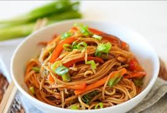
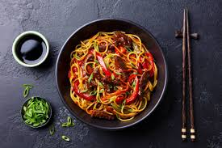

My favorite food
HOW TO MAKE STIR FRY PASTA

About
Stir fry spaghetti is a delicious meal prepared by parboiling and frying pasta with stir-fried vegetables and pepper. You can eat it as a breakfast, lunch or as supper. It can be prepared in 20 minutes and this makes it a good choice of meal at an urgent time. It can also be prepared with stir-fried chicken. Stir fry spaghetti is a good source of carbohydrate and vitamins as it contains pasta and veggies. The carrot, garlic and ginger are not just good for flavour but also good for nutrients. It is advisable to cook it in a well-ventilated kitchen because it involves frying ingredients that has water content in heated oil. It is not difficult to cook. Just follow these easy steps.
Ingredients and Measurements
| Ingredients | Measurements |
| Red Bell Pepper | 2 |
| Green Bell Pepper | 1 |
| Onion | 1 |
| Big Carrot | 1 |
| Thyme | 1/2 Spoonfull |
| Seasoning | 1-2 cubes |
| Spaghetti | 1 pack |
| Curry powder | 1 teaspoonful |
| Vegetable oil | 3-4 tablespoonful |
Recipe for stir-fry pasta
- Dice/chop the carrot, onion, red bell pepper, green bell pepper, ginger and garlic. Cut or dice them on a flat surface such that each of them is separate (do not mix them).
- Put the spaghetti in a pot and boil. Add a spoonful of oil to it and cook it for 10-15 minutes or cook until it is about 70% to 80% done (do not let it soften too much). Bring it down from the fire or cooker and drain it
- Put 3 spoonfuls of oil in your frying pan and add the diced onions and carrot. Cook this for about 2 to 3 minutes under medium heat. Then add the diced green and red bell pepper. Allow it to cook for another 3 to 4 minutes after which you will add the diced ginger and garlic, salt, seasoning cubes, curry powder and thyme (add the seasoning cubes and salt according to taste).
- Add the parboiled pasta to the stir-fried veggies and cook for about 5 minutes and stir once in a while as you cook. Your stir fry spaghetti is ready.
Food Card
Food Card
Food Card
Food Card
Food Card
Food Card